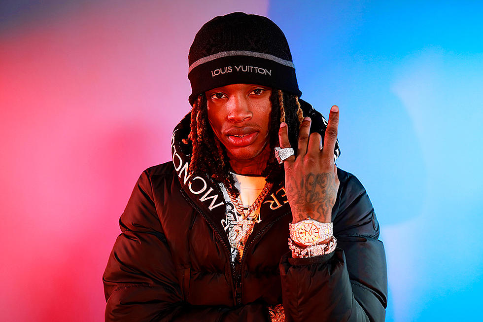

King Von atau nama aslinya Dayvon Daquan Bennett lahir di South Side Chicago dan dibesarkan di lingkungan O Block yang sarat kejahatan.
Pada masa remajanya, Bennett telah beralih ke kejahatan sendiri dan akan menghabiskan bertahun-tahun keluar masuk penjara sebelum dia mulai nge-rap pada tahun 2018.
Setelah mendengar beberapa jejak awalnya, Lil Durk tertarik pada King Von dan menyambutnya ke dalam Only the keluarga.
Single awalnya "Problems" memperoleh daya tarik,
tetapi narasi menawan dari perampokan yang berubah menjadi baku tembak di "Crazy Story" yang berhasil menjangkau lebih banyak penonton.
Sebuah video untuk lagu yang dirilis pada akhir 2018 telah diputar lebih dari 20 juta kali.
Ini menempatkan King Von di chart dan diikuti dengan single "Cousins" yang menampilkan JusBlow600 pada bulan Maret 2019.
Untuk memajukan karirnya yang sedang meningkat, dia pindah dari Chicago ke Atlanta.
Upaya debutnya, Grandson, Vol. 1, rilis September itu.
Menampilkan Lil Durk pada sepasang lagu, set tersebut memulai debutnya di 75 di Billboard 200.